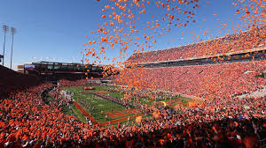
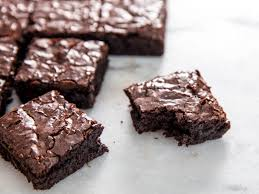
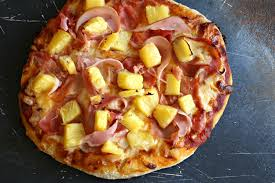

During some point of our lives, we have all participated in the musical arts. Rohit and Tahj played percussion, Mari played flute, and Shreya sang in Choir. Most of us performed primarily in high school but Mari performs in Clemson's Marching Band.
The Tigers went the 2018 season undefeated (15-0) and concluded their 2019 season by competing for their second consecutive national championship title against LSU. The Tigers are expected to be back for the 2020 championship with quarterback Trevor Lawrence for his final season at Clemson. Lawrence gained immense popularity after his immaculate freshman season, which he concluded by smoothly dismantling Alabama's defense.
All of us enjoy a nice warm brownie. (With some ice cream too). Some toppings we like are: M&Ms, caramel, and melted marshmallows.
We all love pizza and some toppings we like are pepperoni and olives! I (Shreya) love pineapple on pizza so we came to an agreement that pineapple on pizza is agreeable and totally sane. Papa John's and Dominos are our favorite places to get pizza and a few of us grew up on Little Caesars.
